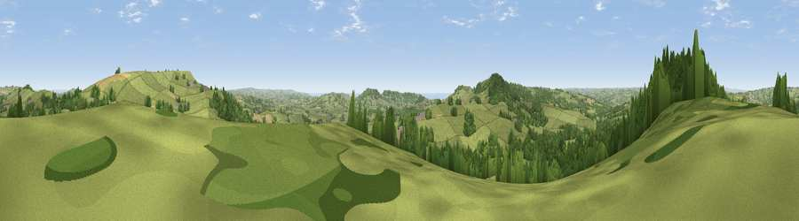

Viewpoint near Marshwood
#9043 in England · top 20% of its area beats it · near MarshwoodThe view, rendered

A 360° render of this exact spot computed from the terrain model, tree cover and land cover — summer colours, afternoon light, calibrated against photographs of famous viewpoints. Real trees, hedges and buildings will differ in detail.
The panorama
Grey silhouette: terrain skyline in each direction (720 bearings, Earth curvature and refraction included). Dashed green: skyline with trees (+15 m) and buildings (+8 m) as obstacles. Blue strip: how far the ground is visible on each bearing.
Where the view opens
Wedge length = distance to the farthest visible ground on that bearing (vegetation-aware). Rings at 10, 25 and 50 km.
What fills the view
74% grassland · 18% woodland · 7% cropland ·
Angular shares of the visible panorama (visual magnitude), not map area. Landscape diversity 0.34 (0–1 Shannon).
Key numbers
More beautiful places nearby
The staircase of upgrades: each row has a higher view potential than everything closer. Driving times are estimates from straight-line distance, calibrated against real road routing — check an actual route before setting out.
| Place | Direction | Drive | Score |
|---|---|---|---|
| Viewpoint near Marshwood | SW · 2 km | ~6 min | 72.2 |
| Viewpoint near Burstock | E · 2 km | ~6 min | 81.8 |
| Lewesdon Hill | E · 5 km | ~11 min | 83.3 |
| Viewpoint near North Chideock | SSE · 9 km | ~17 min | 87.1 |
| Golden Cap | SSE · 9 km | ~18 min | 88.7 |
| The Knoll | SE · 20 km | ~33 min | 91.0 |
50.80487, -2.86793 · source: screening · position refined by local search. Computed location — check access rights before visiting.